Themes and Palettes in cliomicplot
Lucas VHH Tran
2026-07-16
Source:vignettes/themes-palettes.Rmd
themes-palettes.RmdOverview
cliomicplot ships with 10 publication-quality themes and 55+ color palettes. This vignette covers both systems in depth — how to select, customize, register, and combine them for maximum impact.
library(cliomicplot)
#> cliomicplot 0.1.0 - Publication-ready clinical & omics plots
#> Main function: cliplot() | Themes: clitheme() | Params: clipar()Part 1: Themes
Theme Catalog
| Theme | Base Size | Grid | Panel Border | Best For |
|---|---|---|---|---|
cli_bw |
11 | Yes | Yes | General purpose (default) |
cli_classic |
11 | Yes | No | Traditional R look |
cli_minimal |
11 | Faint | No | Modern, clean |
nature |
10 | No | No | Nature submissions |
science |
10 | No | No | Science / AAAS |
nejm |
10 | Subtle | No | NEJM style |
lancet |
10 | Subtle | No | The Lancet |
cell |
10 | No | No | Cell Press |
broadsheet |
14 | Horizontal | Yes | Print / Newspaper |
dark |
11 | Subtle | No | Presentations / Slides |
Side-by-side theme comparison
# Generate the same plot with different themes
data(iris)
p <- function(thm) {
cliplot(Sepal.Length ~ Petal.Length | Species, data = iris,
palette = "jco", theme = thm,
stat.test = NULL,
title = thm)
}
library(patchwork)
#> Warning: package 'patchwork' was built under R version 4.5.1
(p("cli_bw") + p("cli_minimal")) /
(p("nature") + p("nejm")) /
(p("lancet") + p("cell")) +
plot_annotation(title = "Theme Comparison Across Journals")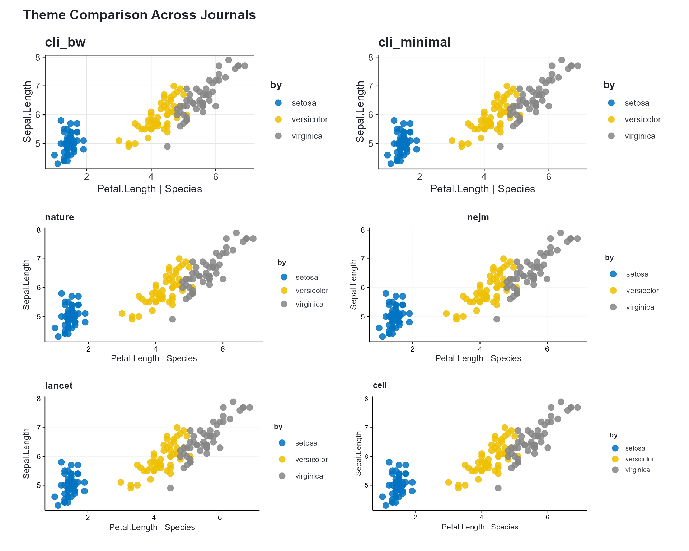
Persistent vs. Ephemeral Themes
# ── Persistent: applies to ALL subsequent plots ────────────────────
clitheme("nature")
#> Theme set to: nature
cliplot(mpg ~ wt, data = mtcars,
title = "Plot 1 — Nature theme persists")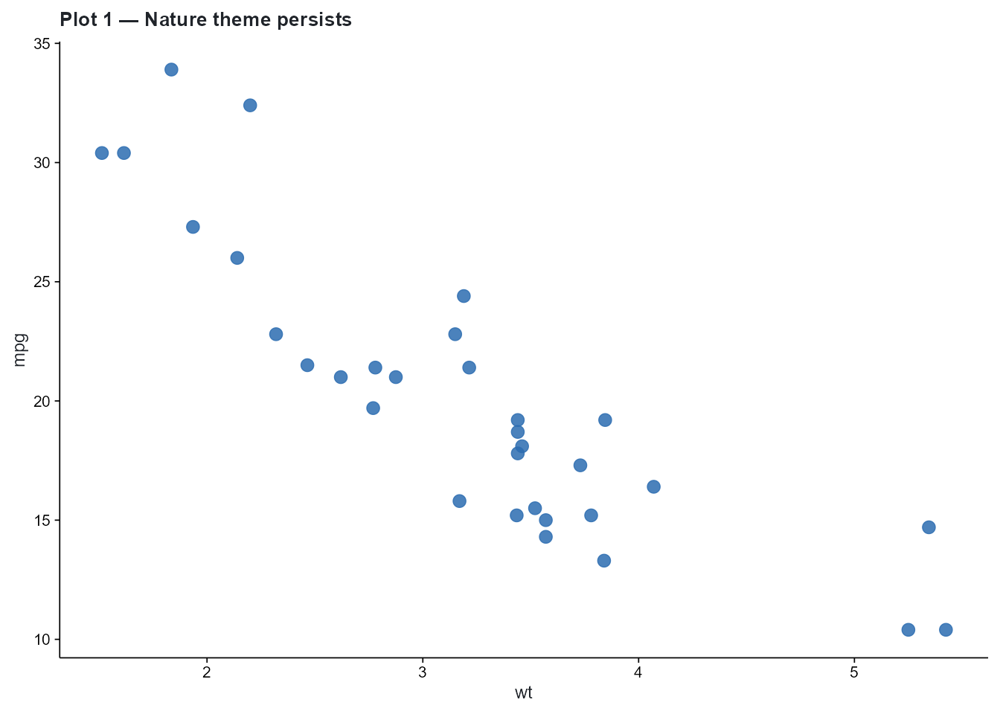
cliplot(len ~ dose, data = ToothGrowth, type = "boxplot",
title = "Plot 2 — Still Nature theme")
#> Warning: Orientation is not uniquely specified when both the x and y aesthetics are
#> continuous. Picking default orientation 'x'.
#> Warning: Continuous x aesthetic
#> ℹ did you forget `aes(group = ...)`?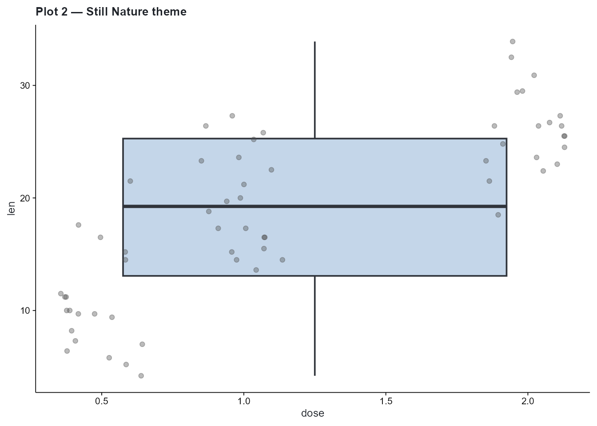
clitheme() # ← reset to default
# ── Ephemeral: applies to ONE plot only ────────────────────────────
cliplot(mpg ~ wt, data = mtcars, theme = "nature",
title = "This plot: Nature")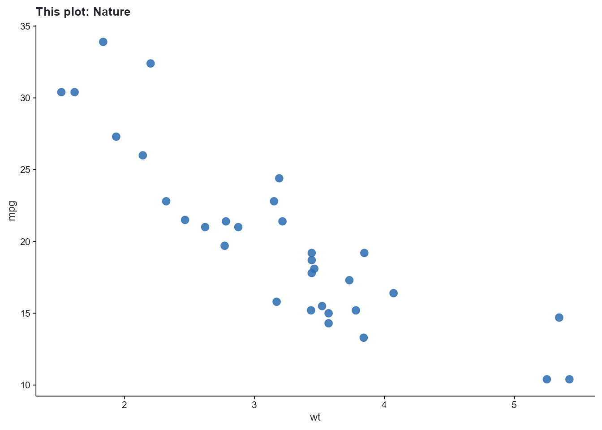
cliplot(Sepal.Length ~ Species, data = iris, type = "boxplot",
theme = "dark",
title = "This plot: Dark")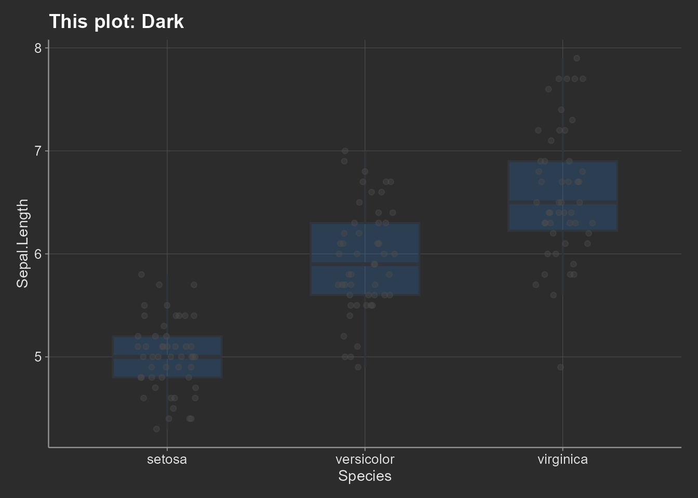
cliplot(mpg ~ wt, data = mtcars,
title = "Back to default — cli_bw")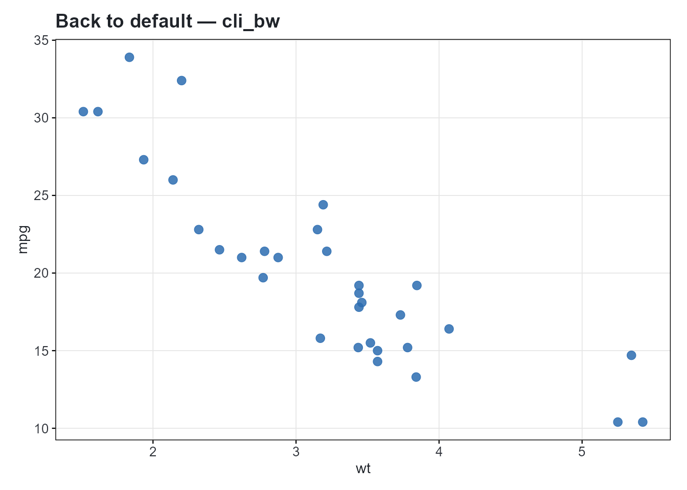
Custom Theme Registration
Register your own themes for reuse across projects:
# Register a custom theme
clitheme_register("my_submission",
base = "cli_bw",
axis.text = ggplot2::element_text(size = 12, face = "bold"),
plot.title = ggplot2::element_text(size = 16, hjust = 0.5, face = "bold"),
plot.subtitle = ggplot2::element_text(size = 11, hjust = 0.5, color = "grey40"),
legend.position = "bottom",
legend.background = ggplot2::element_rect(color = "grey80")
)
#> Theme registered: my_submission
# Use it
clitheme("my_submission")
#> Theme set to registered theme: my_submission
cliplot(mpg ~ wt, data = mtcars,
title = "Custom 'my_submission' Theme",
subtitle = "12pt bold text, centered")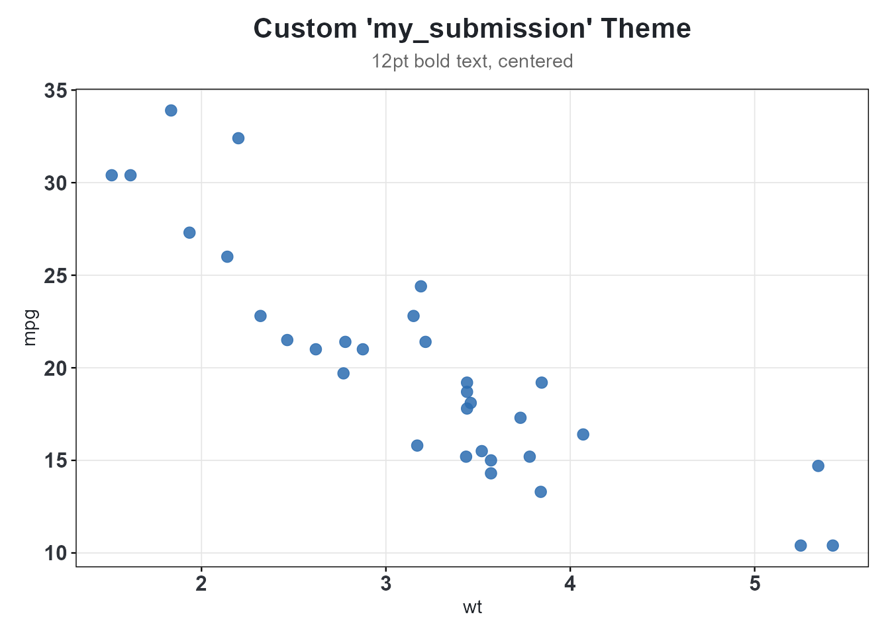
clitheme()
# List all themes (including custom ones)
clitheme_list()
#> [1] "cli_bw" "cli_classic" "cli_minimal" "nature"
#> [5] "science" "nejm" "lancet" "cell"
#> [9] "dark" "showcase" "broadsheet" "my_submission"
# Remove a custom theme
clitheme_unregister("my_submission")
#> Theme unregistered: my_submissionTheme Overrides
Pass inline overrides to tweak any theme element:
# Start with nature, but override axis text size
clitheme("nature", axis.text = ggplot2::element_text(size = 14))
#> Theme set to: nature
cliplot(mpg ~ wt, data = mtcars,
title = "Nature theme with larger axis text")
clitheme()Part 2: Color Palettes
cliomicplot’s 55+ palettes are organized into logical categories:
Quick Lookup
# List all palettes
all_pals <- cli_palette_list()
cat(sprintf("Total palettes: %d\n", length(all_pals)))
#> Total palettes: 44
cat("First 25:\n")
#> First 25:
cat(paste(head(all_pals, 25), collapse = ", "))
#> jco, nejm, lancet, nature, science, okabe_ito, tableau10, tol_muted, heatmap_rdbu, heatmap_rdylbu, heatmap_prgn, volcano, pastel, soft, neon, cyberpunk, blues, reds, greens, purples, oranges, rd_yl_gn, spectral, pi_yg, npgPreview a Palette
cli_palette_show("jco")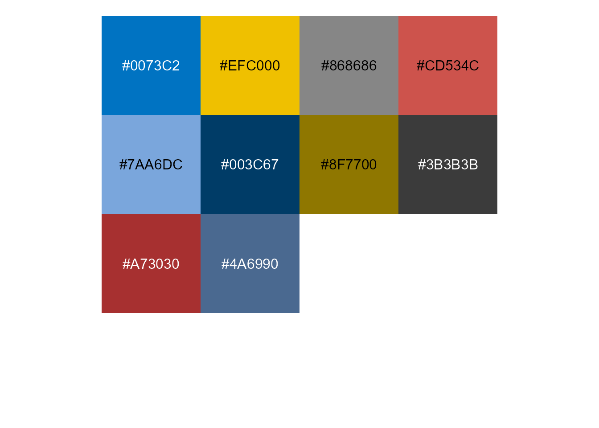
# Show all journal palettes side by side
journal_pals <- c("npg", "nejm", "lancet", "jama", "jco", "bmj", "frontiers")
par(mfrow = c(4, 2), mar = c(1, 3, 2, 1))
for (pal_name in journal_pals) {
cols <- cliomicplot:::get_cli_palette(pal_name, 10)
barplot(rep(1, length(cols)), col = cols, border = NA,
main = pal_name, axes = FALSE, space = 0)
}
par(mfrow = c(1, 1))Palette Categories
📰 Journal Palettes
cliplot(Sepal.Length ~ Petal.Length | Species, data = iris,
palette = "npg",
title = "NPG (Nature Reviews Cancer)")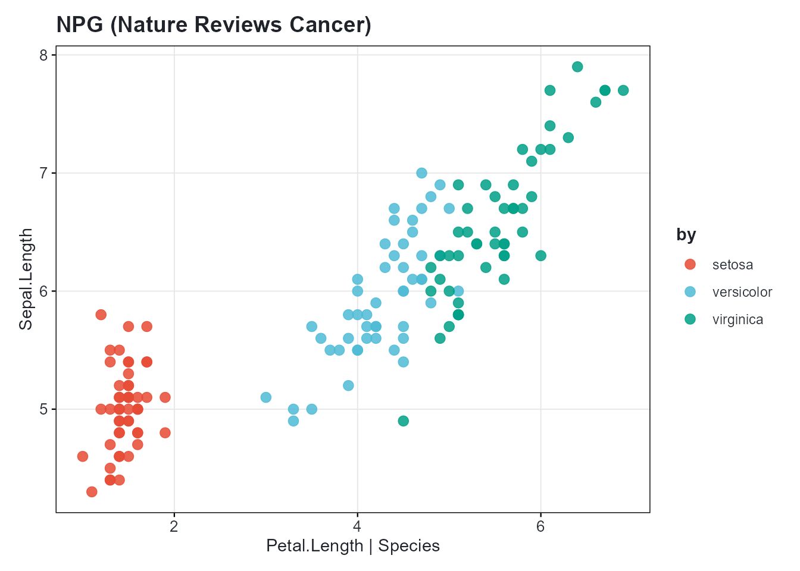
cliplot(Sepal.Length ~ Petal.Length | Species, data = iris,
palette = "lancet",
title = "The Lancet")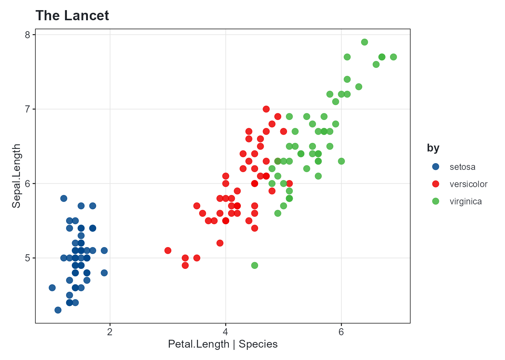
🧬 Genomics & Bioinformatics
# UCSC Genome Browser chromosome colors
cliplot(Sepal.Length ~ Petal.Length | Species, data = iris,
palette = "ucscgb",
title = "UCSC Genome Browser")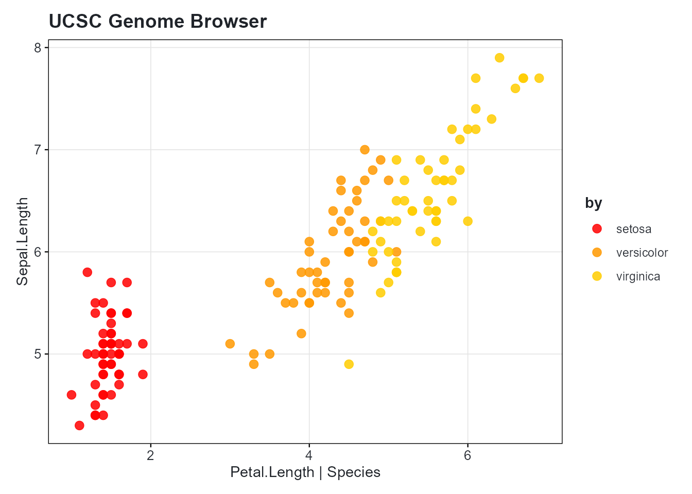
# COSMIC Cancer Hallmarks
cliplot(Sepal.Length ~ Petal.Length | Species, data = iris,
palette = "cosmic",
title = "COSMIC Hallmarks")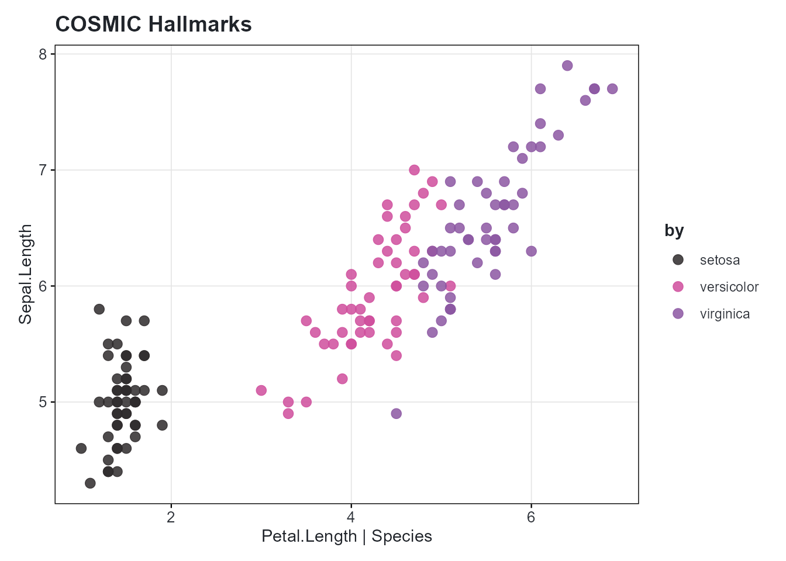
♿ Accessibility (Colorblind-Safe)
These palettes are designed to be distinguishable under common forms of color vision deficiency (deuteranopia, protanopia, tritanopia):
cliplot(Sepal.Length ~ Petal.Length | Species, data = iris,
palette = "okabe_ito",
title = "Okabe & Ito (2008) — Colorblind-safe")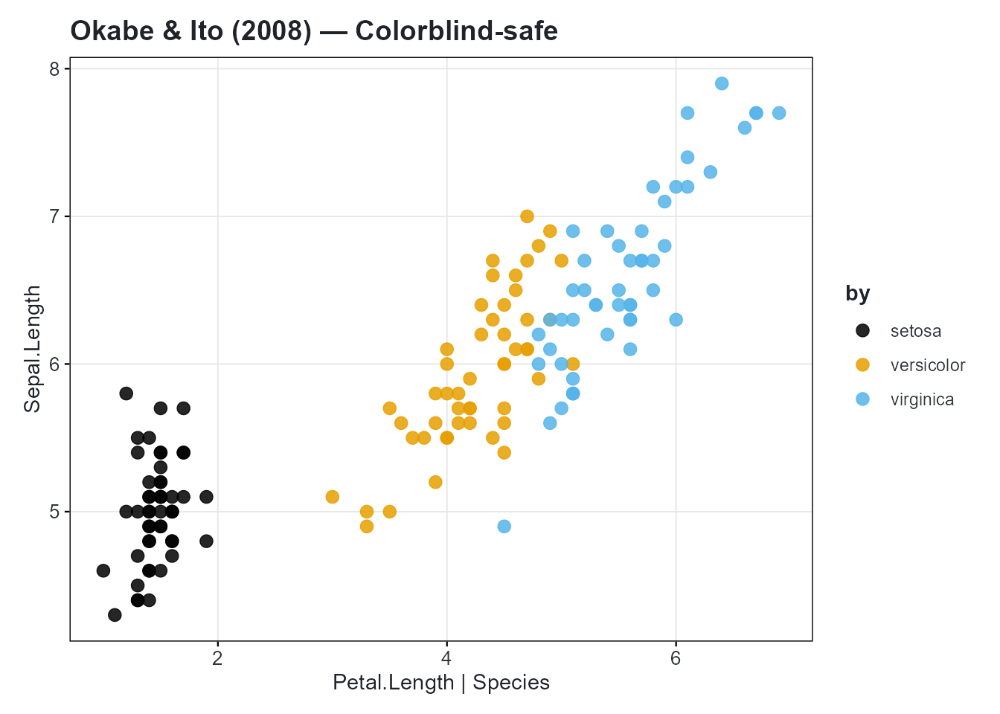
cliplot(Sepal.Length ~ Petal.Length | Species, data = iris,
palette = "tol_muted",
title = "Paul Tol — Muted, Colorblind-safe")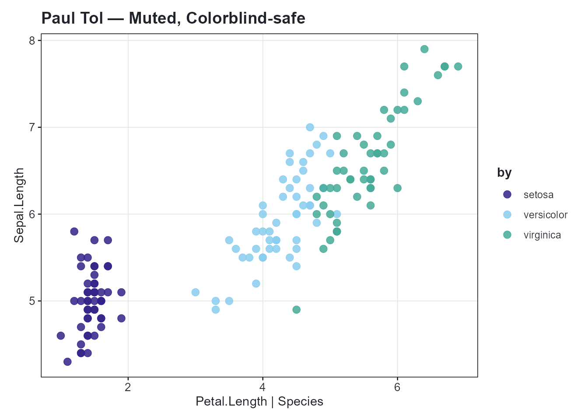
🔥 Heatmap & Diverging
Use type = "continuous" with
palette_scale() for gradient data:
library(ggplot2)
#> Warning: package 'ggplot2' was built under R version 4.5.3
p1 <- ggplot(faithfuld, aes(waiting, eruptions, fill = density)) +
geom_tile() +
palette_scale("heatmap_rdbu", "fill", type = "continuous") +
labs(title = "heatmap_rdbu") +
theme_minimal() +
theme(legend.position = "none")
p2 <- ggplot(faithfuld, aes(waiting, eruptions, fill = density)) +
geom_tile() +
palette_scale("heatmap_prgn", "fill", type = "continuous") +
labs(title = "heatmap_prgn") +
theme_minimal() +
theme(legend.position = "none")
p1 + p2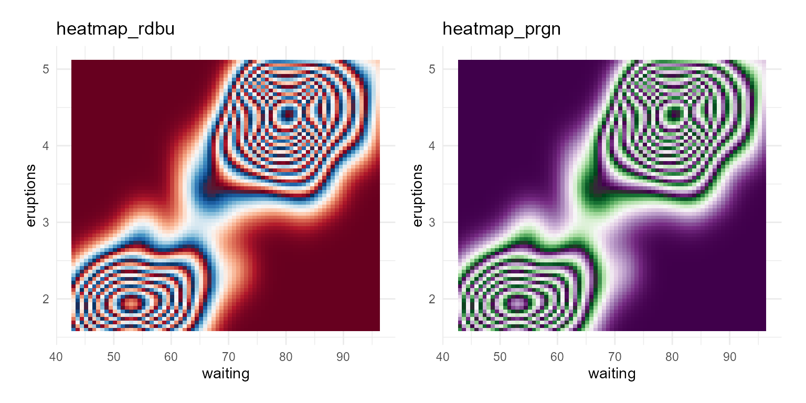
🌃 Dark / Presentation Palettes
clitheme("dark")
#> Theme set to: dark
cliplot(mpg ~ wt | factor(cyl), data = mtcars,
palette = "neon",
title = "Neon Palette on Dark Theme")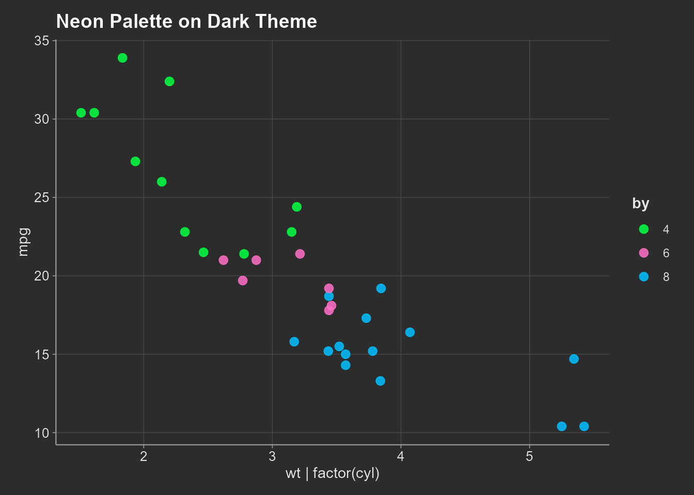
cliplot(Sepal.Length ~ Petal.Length | Species, data = iris,
palette = "cyberpunk",
title = "Cyberpunk Palette on Dark Theme")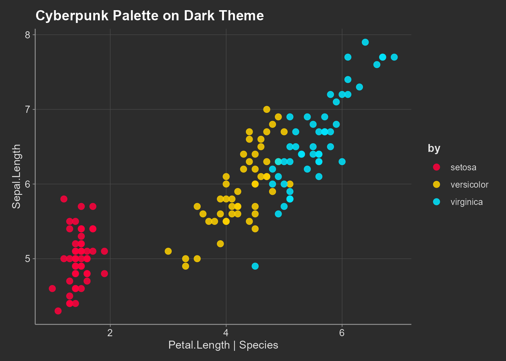
clitheme()Using Palettes as Standalone Scales
All palettes work with any ggplot2 plot — not just cliomicplot:
# Discrete colour scale
ggplot(iris, aes(Sepal.Length, Petal.Length, colour = Species)) +
geom_point(size = 3) +
palette_scale("jama", "color") +
theme_bw() +
labs(title = "JAMA palette via palette_scale()")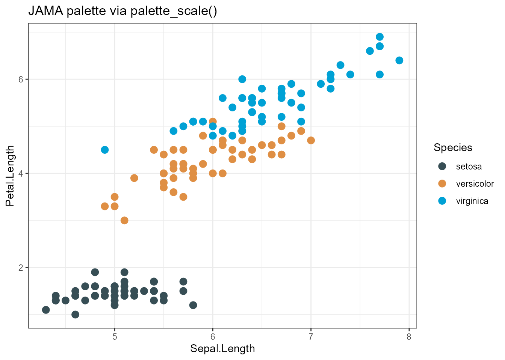
# Discrete fill scale
ggplot(mpg, aes(class, fill = class)) +
geom_bar() +
palette_scale("uchicago", "fill") +
theme_classic() +
labs(title = "UChicago palette via palette_scale()",
subtitle = "Works on any ggplot2 plot!")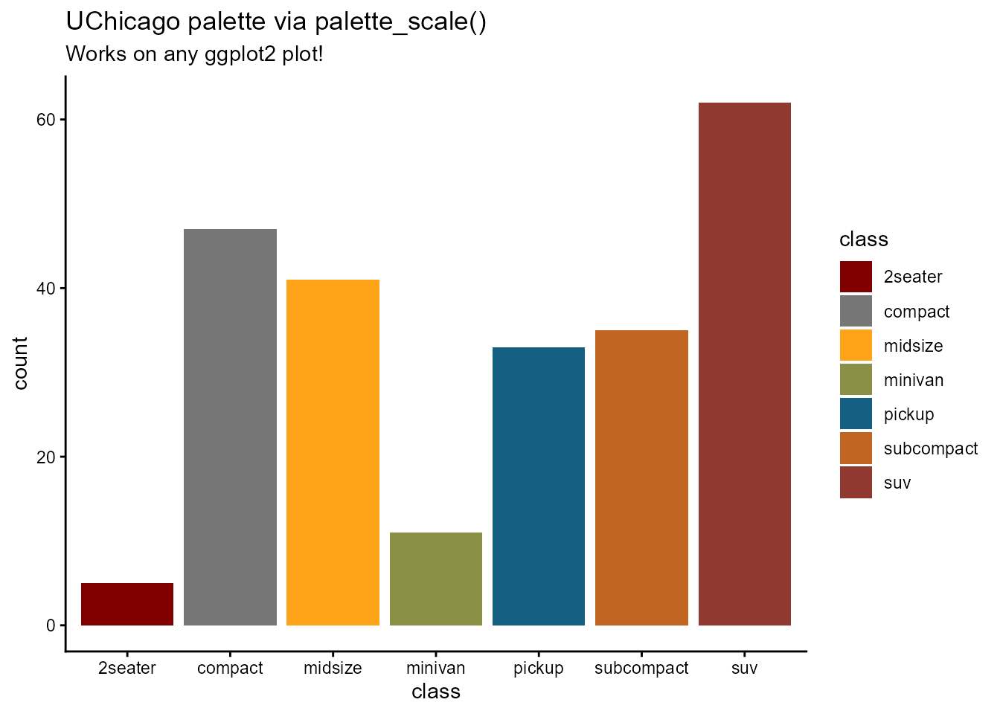
Convenience Scale Wrappers
# scale_color_cli() — discrete colour
ggplot(iris, aes(Sepal.Length, Petal.Length, color = Species)) +
geom_point(size = 3) +
scale_color_cli("jco") +
theme_bw()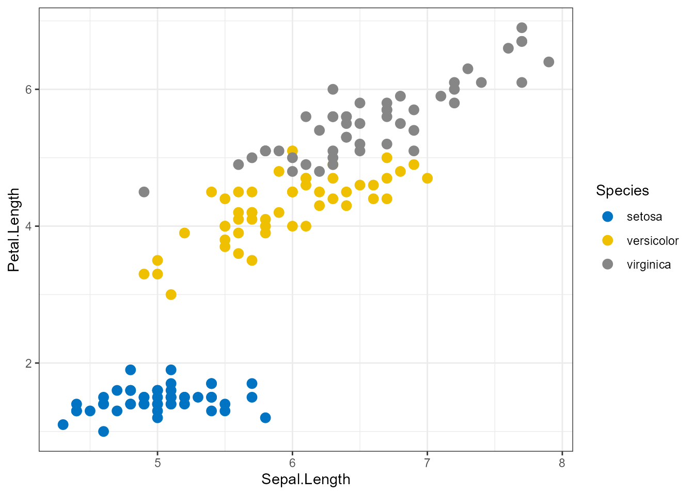
# scale_fill_cli_c() — continuous fill
ggplot(faithfuld, aes(waiting, eruptions, fill = density)) +
geom_tile() +
scale_fill_cli_c("blues") +
theme_minimal()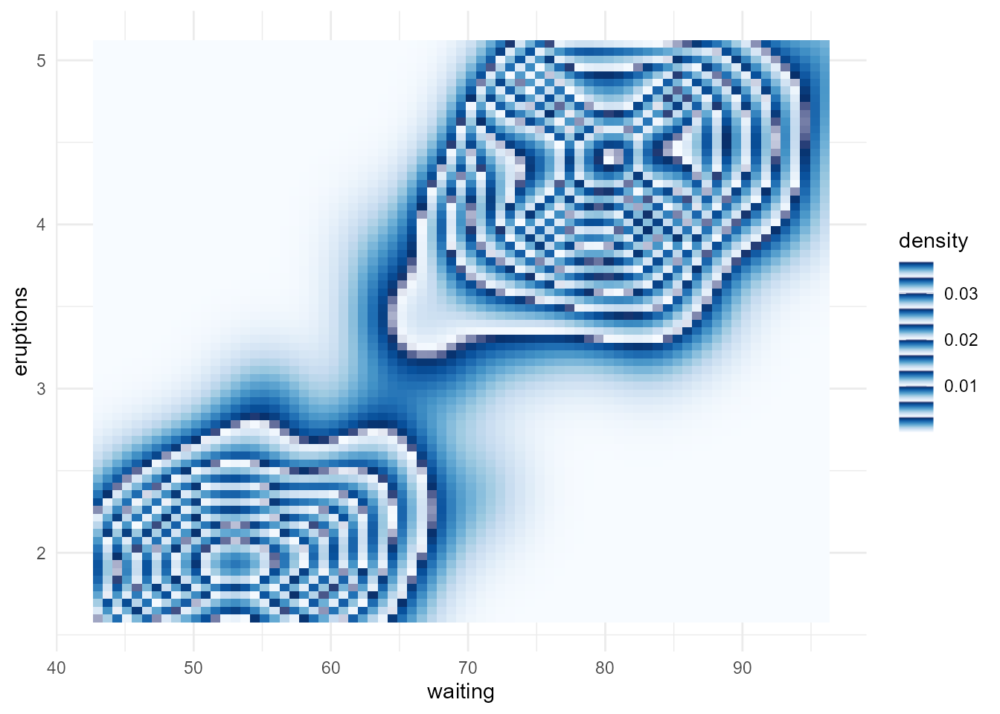
Reversing and Alpha
# Reverse a palette
ggplot(iris, aes(Sepal.Length, Petal.Length, color = Species)) +
geom_point(size = 3) +
palette_scale("jco", "color", reverse = TRUE) +
theme_bw() +
labs(title = "JCO palette — reversed")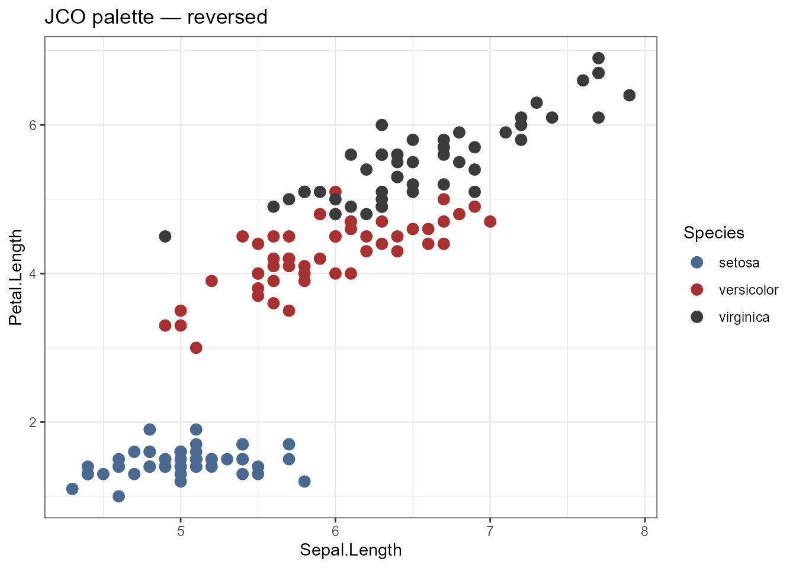
# Apply transparency
ggplot(iris, aes(Sepal.Length, Petal.Length, color = Species)) +
geom_point(size = 3) +
palette_scale("cosmic", "color", alpha = 0.5) +
theme_bw() +
labs(title = "COSMIC palette — 50% alpha")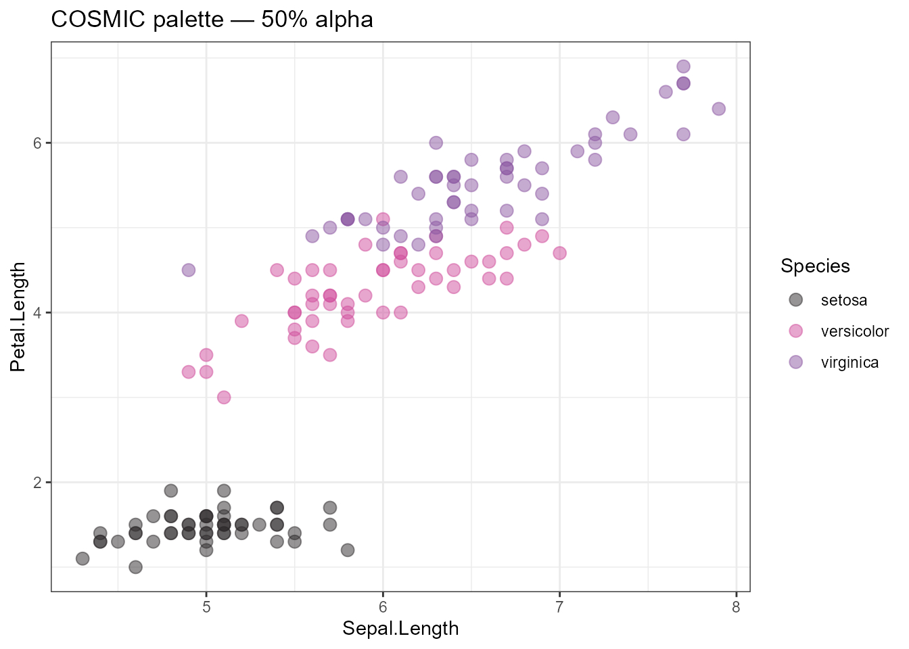
Part 3: Combining Themes and Palettes
The most powerful aspect of cliomicplot is how themes and palettes work together. Here are some tested combinations for common use cases:
| Scenario | Theme | Palette |
|---|---|---|
| Nature submission | nature |
npg |
| NEJM oncology paper | nejm |
nejm |
| Lancet clinical trial | lancet |
lancet |
| Cell genomics paper | cell |
cosmic or ucscgb
|
| Conference slides | dark |
neon or cyberpunk
|
| Preprint / bioRxiv | broadsheet |
jco |
| General-purpose (safe) | cli_bw |
okabe_ito |
# Example: NEJM oncology paper
clitheme("nejm")
#> Theme set to: nejm
cliplot(Sepal.Length ~ Petal.Length | Species, data = iris,
palette = "nejm",
title = "NEJM Theme + NEJM Palette")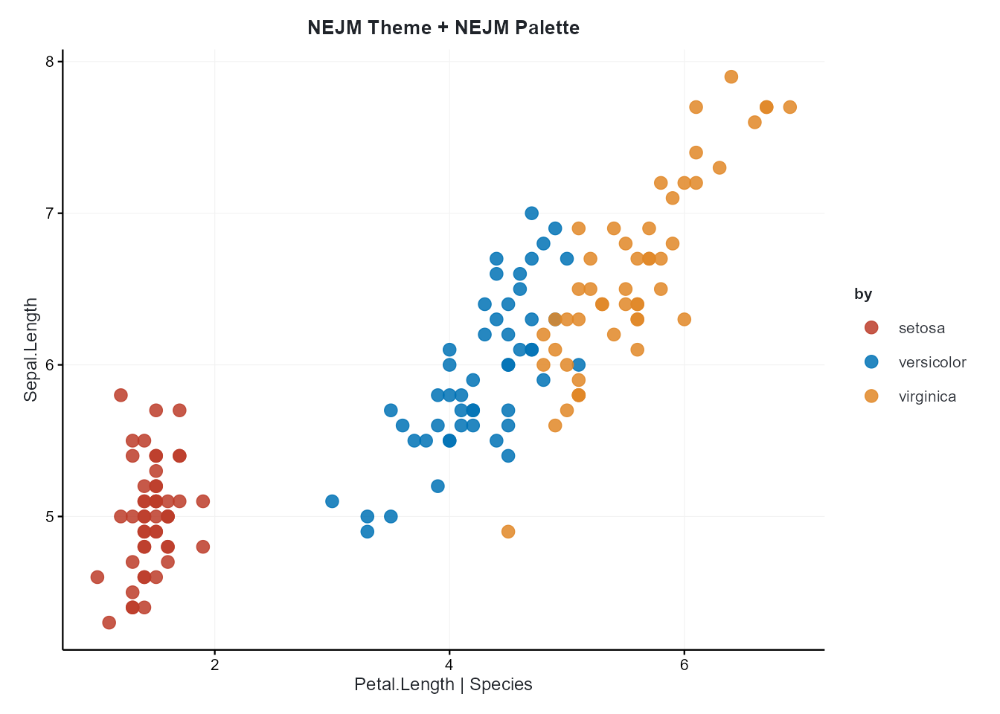
clitheme()
# Example: Genomics paper with COSMIC
clitheme("cell")
#> Theme set to: cell
cliplot(Sepal.Length ~ Petal.Length | Species, data = iris,
palette = "cosmic",
title = "Cell Theme + COSMIC Palette")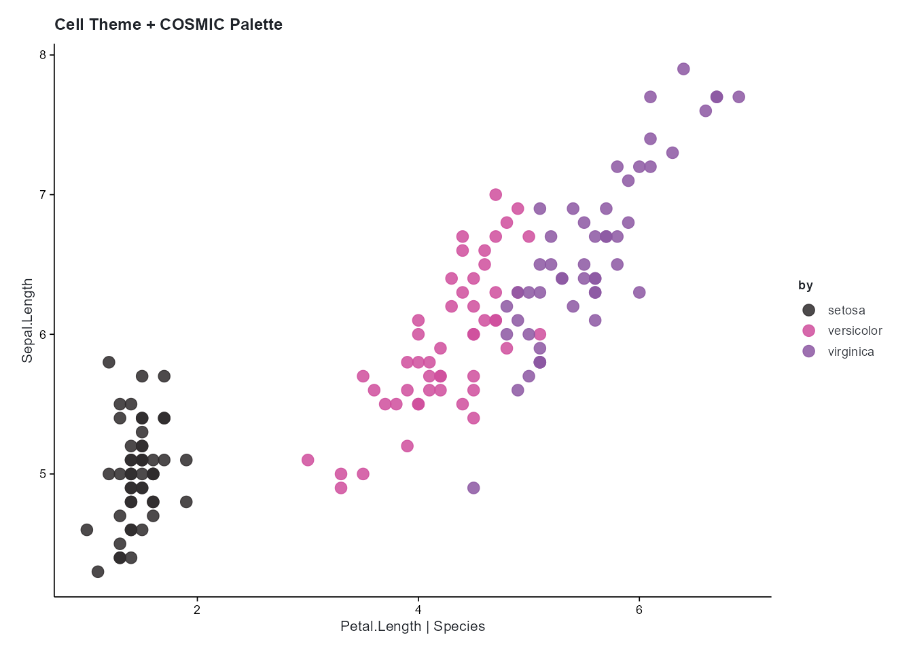
clitheme()Summary
- 10 themes — from journal-specific to presentation-ready
- 55+ palettes — journal, genomics, accessibility, design, and pop culture
- Themes can be persistent
(
clitheme("nature")) or ephemeral (theme = "nature") - Register custom themes with
clitheme_register() - All palettes work as standalone
palette_scale()for any ggplot2 plot - Combine themes and palettes freely for the perfect publication look
# Reset to defaults
clitheme()